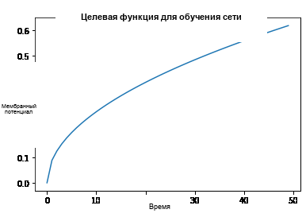
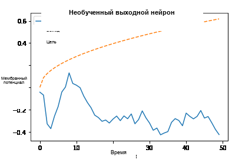
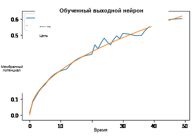

Русский перевод. Неофициальный перевод актуальной документации snnTorch latest (0.9.4). Оригинал: https://snntorch.readthedocs.io/en/latest/. Документация распространяется по лицензии CC BY-SA 3.0.
Регрессия с SNN: Часть I
Изучение мембранных потенциалов с помощью LIF-нейронов
Учебное пособие написано Александром Хенкесом (ORCID) и Джейсоном К. Эшрагианом (ncg.ucsc.edu)

Этот учебник основан на следующих статьях по нелинейной регрессии и спайковым нейронным сетям. Если вы находите эти ресурсы или код полезными в вашей работе, пожалуйста, рассмотрите возможность цитирования следующих источников:
Примечание
- Этот учебник является статической нередактируемой версией. Интерактивные редактируемые версии доступны по следующим ссылкам:
В серии учебных пособий по регрессии вы узнаете, как использовать snnTorch для выполнения регрессии с использованием различных моделей спайковых нейронов, включая:
Нейроны Leaky Integrate-and-Fire (LIF)
Рекуррентные LIF-нейроны
Спайковые LSTM
Обзор серии учебных пособий по регрессии:
Часть I (этот учебник) обучает мембранный потенциал LIF-нейрона следовать заданной траектории во времени.
Часть II будет использовать LIF-нейроны с рекуррентной обратной связью для выполнения классификации с использованием функций потерь на основе регрессии
Часть III будет использовать более сложную спайковую сеть LSTM для обучения времени срабатывания нейрона.
!pip install snntorch --quiet
# imports
import snntorch as snn
from snntorch import surrogate
from snntorch import functional as SF
from snntorch import utils
import torch
import torch.nn as nn
from torch.utils.data import DataLoader
from torchvision import datasets, transforms
import torch.nn.functional as F
import matplotlib.pyplot as plt
import numpy as np
import itertools
import random
import statistics
import tqdm
Зафиксируем случайное зерно:
# Seed
torch.manual_seed(0)
random.seed(0)
np.random.seed(0)
1. Спайковая регрессия
1.1 Краткий обзор линейной и нелинейной регрессии
Предыдущие учебные пособия были сосредоточены на задачах многоклассовой классификации. Но если вы зашли так далеко, то, вероятно, можно с уверенностью сказать, что ваш мозг способен на большее, чем различать кошек и собак. Вы потрясающие, и мы верим в вас.
Альтернативная задача — регрессия, где несколько входных признаков \(x_i\) используются для оценки выходного значения на непрерывной числовой прямой \(y \in \mathbb{R}\). Классический пример — оценка цены дома по набору входных данных, таких как размер участка, количество комнат и местный спрос на тосты с авокадо.
Целью задачи регрессии часто является среднеквадратичная ошибка:
или средняя абсолютная ошибка:
где \(y\) является целевым значением, а \(\hat{y}\) — предсказанное значение.
Одна из проблем линейной регрессии заключается в том, что она может использовать только линейные взвешивания входных признаков при прогнозировании выхода. Использование нейронной сети, обученной с использованием среднеквадратичной ошибки в качестве функции стоимости, позволяет выполнять нелинейную регрессию на более сложных данных.
1.2 Спайковые нейроны в регрессии
Спайки — это тип нелинейности, который также можно использовать для обучения более сложным задачам регрессии. Но если спайковые нейроны испускают только спайки, представленные единицами и нулями, то как мы можем выполнять регрессию? Рад, что вы спросили! Вот несколько идей:
Использовать общее количество спайков (код на основе частоты)
Использовать время спайка (временной/латентный код)
Использовать расстояние между парами спайков (т.е., используя межспайковый интервал)
Или, возможно, вы протыкаете мембрану нейрона электрическим зондом и решаете использовать вместо этого мембранный потенциал, который является непрерывным значением.
Note: является ли это обманом напрямую обращаться к мембранному потенциалу, т.е. к тому, что должно быть «скрытым состоянием»? На данный момент нет единого мнения в нейроморфном сообществе. Несмотря на то, что это переменная высокой точности во многих моделях (и, следовательно, дорогостоящая в вычислительном отношении), мембранный потенциал часто используется в функциях потерь, поскольку это более «непрерывная» переменная по сравнению с дискретными временными шагами или подсчетом спайков. Хотя работа со значениями более высокой точности требует больше энергии и имеет большую задержку, влияние может быть незначительным, если у вас небольшой выходной слой, или если выходные данные не нужно масштабировать весами. На самом деле это вопрос, зависящий от конкретной задачи и аппаратного обеспечения.
2. Настройка задачи регрессии
2.1 Создание набора данных
Давайте построим простую игрушечную задачу. Следующий класс возвращает
функцию, которую мы надеемся изучить. Если mode = "linear", генерируется прямая линия
со случайным наклоном. Если mode = "sqrt", то вместо этого берется квадратный
корень этой прямой линии.
Наша цель: обучить leaky integrate-and-fire нейрон так, чтобы его мембранный потенциал следовал за выборкой с течением времени.
class RegressionDataset(torch.utils.data.Dataset):
"""Simple regression dataset."""
def __init__(self, timesteps, num_samples, mode):
"""Linear relation between input and output"""
self.num_samples = num_samples # number of generated samples
feature_lst = [] # store each generated sample in a list
# generate linear functions one by one
for idx in range(num_samples):
end = float(torch.rand(1)) # random final point
lin_vec = torch.linspace(start=0.0, end=end, steps=timesteps) # generate linear function from 0 to end
feature = lin_vec.view(timesteps, 1)
feature_lst.append(feature) # add sample to list
self.features = torch.stack(feature_lst, dim=1) # convert list to tensor
# option to generate linear function or square-root function
if mode == "linear":
self.labels = self.features * 1
elif mode == "sqrt":
slope = float(torch.rand(1))
self.labels = torch.sqrt(self.features * slope)
else:
raise NotImplementedError("'linear', 'sqrt'")
def __len__(self):
"""Number of samples."""
return self.num_samples
def __getitem__(self, idx):
"""General implementation, but we only have one sample."""
return self.features[:, idx, :], self.labels[:, idx, :]
Чтобы увидеть, как выглядит случайная выборка, выполните следующий блок кода:
num_steps = 50
num_samples = 1
mode = "sqrt" # 'linear' or 'sqrt'
# generate a single data sample
dataset = RegressionDataset(timesteps=num_steps, num_samples=num_samples, mode=mode)
# plot
sample = dataset.labels[:, 0, 0]
plt.plot(sample)
plt.title("Target function to teach network")
plt.xlabel("Time")
plt.ylabel("Membrane Potential")
plt.show()
{kind=link}

2.2 Создание DataLoader
Объекты Dataset, созданные выше, загружают данные в память, а
DataLoader будет подавать их пакетами. DataLoaders в PyTorch — это
удобный интерфейс для передачи данных в сеть. Они возвращают итератор,
разделённый на мини-пакеты размером batch_size.
batch_size = 1 # only one sample to learn
dataloader = torch.utils.data.DataLoader(dataset=dataset, batch_size=batch_size, drop_last=True)
3. Построение модели
Давайте попробуем простую сеть, используя только leaky integrate-and-fire слои без рекуррентности. Последующие руководства покажут, как использовать более сложные типы нейронов с рекуррентностью высшего порядка. Эти архитектуры должны работать нормально, если в данных нет сильной временной зависимости, т.е. следующий временной шаг слабо зависит от предыдущего.
Несколько замечаний по архитектуре ниже:
Установка
learn_beta=Trueпозволяет скорости затуханияbetaбыть обучаемым параметромКаждый нейрон имеет уникальный и случайно инициализированный порог и скорость затухания
Выходной слой отключает механизм сброса, устанавливая
reset_mechanism="none"так как мы не будем использовать выходные спайки
class Net(torch.nn.Module):
"""Simple spiking neural network in snntorch."""
def __init__(self, timesteps, hidden):
super().__init__()
self.timesteps = timesteps # number of time steps to simulate the network
self.hidden = hidden # number of hidden neurons
spike_grad = surrogate.fast_sigmoid() # surrogate gradient function
# randomly initialize decay rate and threshold for layer 1
beta_in = torch.rand(self.hidden)
thr_in = torch.rand(self.hidden)
# layer 1
self.fc_in = torch.nn.Linear(in_features=1, out_features=self.hidden)
self.lif_in = snn.Leaky(beta=beta_in, threshold=thr_in, learn_beta=True, spike_grad=spike_grad)
# randomly initialize decay rate and threshold for layer 2
beta_hidden = torch.rand(self.hidden)
thr_hidden = torch.rand(self.hidden)
# layer 2
self.fc_hidden = torch.nn.Linear(in_features=self.hidden, out_features=self.hidden)
self.lif_hidden = snn.Leaky(beta=beta_hidden, threshold=thr_hidden, learn_beta=True, spike_grad=spike_grad)
# randomly initialize decay rate for output neuron
beta_out = torch.rand(1)
# layer 3: leaky integrator neuron. Note the reset mechanism is disabled and we will disregard output spikes.
self.fc_out = torch.nn.Linear(in_features=self.hidden, out_features=1)
self.li_out = snn.Leaky(beta=beta_out, threshold=1.0, learn_beta=True, spike_grad=spike_grad, reset_mechanism="none")
def forward(self, x):
"""Forward pass for several time steps."""
# Initalize membrane potential
mem_1 = self.lif_in.init_leaky()
mem_2 = self.lif_hidden.init_leaky()
mem_3 = self.li_out.init_leaky()
# Empty lists to record outputs
mem_3_rec = []
# Loop over
for step in range(self.timesteps):
x_timestep = x[step, :, :]
cur_in = self.fc_in(x_timestep)
spk_in, mem_1 = self.lif_in(cur_in, mem_1)
cur_hidden = self.fc_hidden(spk_in)
spk_hidden, mem_2 = self.lif_hidden(cur_hidden, mem_2)
cur_out = self.fc_out(spk_hidden)
_, mem_3 = self.li_out(cur_out, mem_3)
mem_3_rec.append(mem_3)
return torch.stack(mem_3_rec)
Создайте экземпляр сети ниже:
hidden = 128
device = torch.device("cuda") if torch.cuda.is_available() else torch.device("mps") if torch.backends.mps.is_available() else torch.device("cpu")
model = Net(timesteps=num_steps, hidden=hidden).to(device)
Давайте понаблюдаем за поведением выходного нейрона до того, как он был обучен, и сравним его с целевой функцией:
train_batch = iter(dataloader)
# run a single forward-pass
with torch.no_grad():
for feature, label in train_batch:
feature = torch.swapaxes(input=feature, axis0=0, axis1=1)
label = torch.swapaxes(input=label, axis0=0, axis1=1)
feature = feature.to(device)
label = label.to(device)
mem = model(feature)
# plot
plt.plot(mem[:, 0, 0].cpu(), label="Output")
plt.plot(label[:, 0, 0].cpu(), '--', label="Target")
plt.title("Untrained Output Neuron")
plt.xlabel("Time")
plt.ylabel("Membrane Potential")
plt.legend(loc='best')
plt.show()
{kind=link}

Поскольку сеть еще не обучена, неудивительно, что мембранный потенциал следует бессмысленной эволюции.
4. Построение цикла обучения
Мы вызываем torch.nn.MSELoss() чтобы минимизировать среднеквадратическую ошибку между
мембранным потенциалом и целевой эволюцией.
Мы выполняем итерацию по той же выборке данных.
num_iter = 100 # train for 100 iterations
optimizer = torch.optim.Adam(params=model.parameters(), lr=1e-3)
loss_function = torch.nn.MSELoss()
loss_hist = [] # record loss
# training loop
with tqdm.trange(num_iter) as pbar:
for _ in pbar:
train_batch = iter(dataloader)
minibatch_counter = 0
loss_epoch = []
for feature, label in train_batch:
# prepare data
feature = torch.swapaxes(input=feature, axis0=0, axis1=1)
label = torch.swapaxes(input=label, axis0=0, axis1=1)
feature = feature.to(device)
label = label.to(device)
# forward pass
mem = model(feature)
loss_val = loss_function(mem, label) # calculate loss
optimizer.zero_grad() # zero out gradients
loss_val.backward() # calculate gradients
optimizer.step() # update weights
# store loss
loss_hist.append(loss_val.item())
loss_epoch.append(loss_val.item())
minibatch_counter += 1
avg_batch_loss = sum(loss_epoch) / minibatch_counter # calculate average loss p/epoch
pbar.set_postfix(loss="%.3e" % avg_batch_loss) # print loss p/batch
5. Оценка
loss_function = torch.nn.L1Loss() # Use L1 loss instead
# pause gradient calculation during evaluation
with torch.no_grad():
model.eval()
test_batch = iter(dataloader)
minibatch_counter = 0
rel_err_lst = []
# loop over data samples
for feature, label in test_batch:
# prepare data
feature = torch.swapaxes(input=feature, axis0=0, axis1=1)
label = torch.swapaxes(input=label, axis0=0, axis1=1)
feature = feature.to(device)
label = label.to(device)
# forward-pass
mem = model(feature)
# calculate relative error
rel_err = torch.linalg.norm(
(mem - label), dim=-1
) / torch.linalg.norm(label, dim=-1)
rel_err = torch.mean(rel_err[1:, :])
# calculate loss
loss_val = loss_function(mem, label)
# store loss
loss_hist.append(loss_val.item())
rel_err_lst.append(rel_err.item())
minibatch_counter += 1
mean_L1 = statistics.mean(loss_hist)
mean_rel = statistics.mean(rel_err_lst)
print(f"{'Mean L1-loss:':<{20}}{mean_L1:1.2e}")
print(f"{'Mean rel. err.:':<{20}}{mean_rel:1.2e}")
>> Mean L1-loss: 1.22e-02
>> Mean rel. err.: 2.84e-02
Давайте построим график наших результатов для наглядного представления:
mem = mem.cpu()
label = label.cpu()
plt.title("Trained Output Neuron")
plt.xlabel("Time")
plt.ylabel("Membrane Potential")
for i in range(batch_size):
plt.plot(mem[:, i, :].cpu(), label="Output")
plt.plot(label[:, i, :].cpu(), label="Target")
plt.legend(loc='best')
plt.show()
{kind=link}

Он немного неровный, но выглядит неплохо.
Вы можете попробовать улучшить аппроксимацию кривой, увеличив размер скрытого слоя, увеличив количество итераций, добавив дополнительные временные шаги, выполнив тонкую настройку гиперпараметров или используя совершенно другой тип нейрона.
Заключение
Следующие руководства по регрессии будут тестировать более мощные спайковые нейроны, такие как рекуррентные LIF-нейроны и спайковые LSTM, чтобы увидеть, как они сравниваются.
Если вам нравится этот проект, пожалуйста, поставьте ⭐ репозиторию на GitHub — это самый простой и лучший способ поддержать его.
Дополнительные ресурсы
Более подробную информацию о нелинейной регрессии с помощью SNNs можно найти в нашем соответствующем препринте здесь: Henkes, A.; Eshraghian, J. K.; and Wessels, H. «Spiking neural networks for nonlinear regression», arXiv preprint arXiv:2210.03515, Окт. 2022.